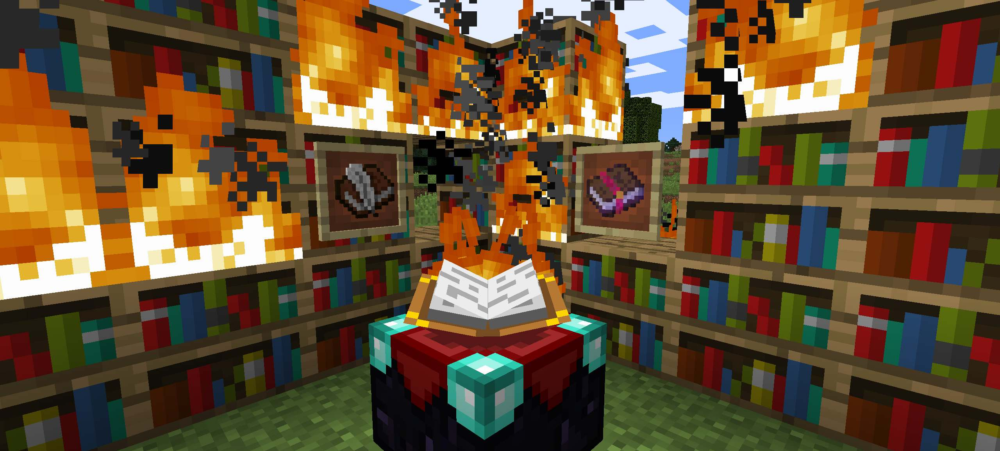
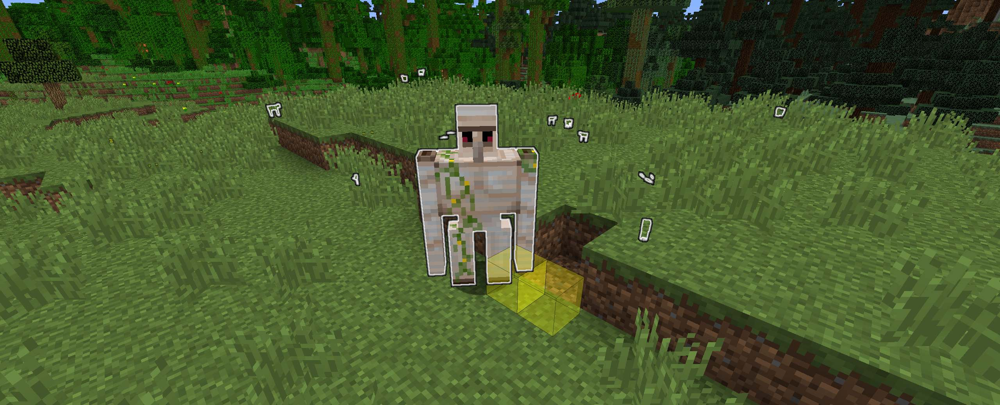
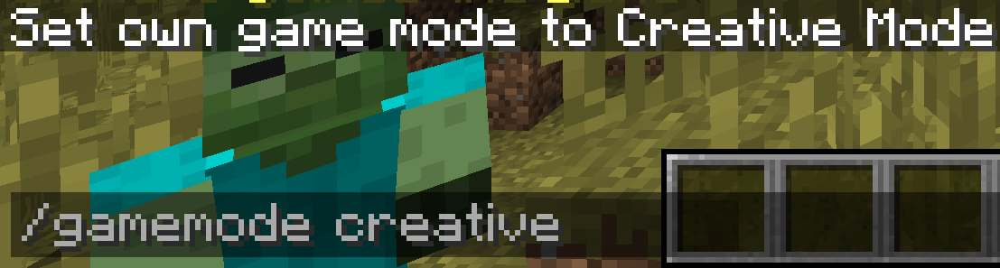
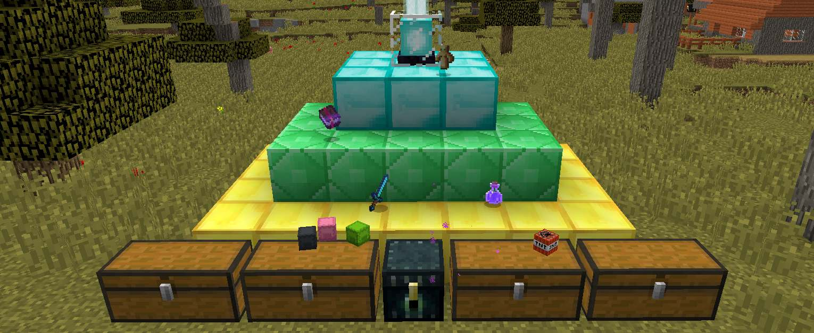

minecraft-anarchy.org delivers a true Anarchy type gameplay experience.
Cheating and griefing are allowed. There is no kind of build protection anywhere on the server. Admins will only address game breaking issues.
Minecraft Anarchy was developed by a group of Minecraft players and technology enthusiasts that became tired of waiting in 2b2t.org's queue. This server was created to provide a lagfree experience that upholds the spirit of minimal intervention into the game. As a matter of course, the map will never be changed.
Learn more about the rules
The gameplay feels as vanilla as possible while adding only slight enhancements. All plugins running on the server are custom written to reduce lag and to fit their exact purpose. Teleportation with cooldown removes the need to invest hours to travel vast distances while our hourly lottery gives every player a small chance to attain a fortune.
Learn more about the available commands
Your help in spreading the word is greatly appriciated! We appriciate your time to create posts and videos on social media containing content about minecraft-anarchy.org. Of course, you can also use the common Minecraft server lists to vote for your favorite Minecraft Anarchy server.
Learn more about promotional rewards
This project including the server is pre-funded by its creators until 2022. That means you can trust to play on this server over the next years. It is hosted with a german cloud provider, ressources are added when required.
Learn more about the technical details
Our users privacy is important to us. That is why the website as well as the Minecraft server do not save IP addresses to logfiles on disk. Saved information about your player can not be related to your real identity on the internet. Connections from VPN or proxy servers are not blocked. You do not need to identify with an official Minecraft account.
Learn more about how we protect private data
Rules and Guidelines

§1 Players must be of full legal age (+18 years old).
§2 The server admins will address and prevent any behavior that they consider game breaking. This includes, but is not limited to: very fast methods of loading new chunks, extremely overpowered weapons or travel devices, producing lots of lag.
§3 The server is hosted in germany, which means if you build swastikas or talk xenophobic in chat, the admins will troll you very hard (for an extended period of time, which may ruin your game).
How we protect your privacy

Your connection information is not shared with othersThe servers firewall is configured to block all but few outgoing connections. This way the minecraft server application is prevented from exporting data about you to to Mojang / Microsoft / others.
Your connection information is not permanently saved to diskThis servers webserver and minecraft server application is configured to not write to a logfile on disk. Instead, the log messages are written into a pipe, where they can be read by fail2ban or an administrator for debugging purposes. This means that none of your connection data is permanently written to disk on this server.
Proxy servers are allowedConnections from VPN or proxy servers are not blocked.
This server is run by a group of Minecraft Players, Coders and Linux enthusiasts. Please note that we do not provide player support for this server. If someone blows up your house with TNT and you loose all your diamonds, thats your problem. If the server lags or you witness any racism however, we are happy to help - please use the in game /report command in this case.
Email
In any other case feel free to write us an Email to:minecraft dash anarchy [at] mailbox dot org
Player commands

The following commands are available to all players:
General help
Command
Description
/help
Gives an overview of all available commands
Show rules
Command
Description
/rules
Shows the rules of the server
Report problems
You can contact the administrators of the server directly from within the game using the /report command. All given arguments will be passed as text to the admins.
Please do not report other players that do not break any rules.
Please report lags over more than 30 seconds, racism, or behaviors that make the game unplayable.
Command
Description
/report
Shows the help page for the /report tool
/report racism the player foo-bar-21 has been using racist language in chat
Files a report
Teleportation
Teleport to specific and random points in all worlds or teleport to other players.
Each executed teleportation resets your cooldown time of three real hours until you can teleport the next time. Teleportation to the nether or the end is only permitted if you have been to the nether or end before (you need the acchievment on the server).
Command
Description
/tp help
Show help text for all /tp commands
/tp wild
Teleport to a random point in your current world within a radius of 200.000 blocks
/tp sethome
Set your home teleportation point
/tp home
Teleport to your home teleportation point
/tp to <player>
Show help text for all /tp commands
/tp accept <player>
Accept a specific players teleport request
/tp deny <player>
Deny a specific players teleport request
/tp poi
List available Points Of Interest
/tp poi <name_of_poi>
Teleport to the given Point Of Interest (like spawn, nether, end)
Kill your player
Kills your player in a short time in several creative ways
Command
Description
/kill
Reduces the players health to zero within a short amount of time
Player Rewards

There are multiple attractive ways to earn rewards on the server.
Please note that we do not give out admin status or creative mode as a reward. Unless you are famous on youtube. Then maybe. If you don't abuse it :)
Spending time on the server
There is a lottery every full hour. All players participate automatically. Each price has its own chance of being chosen for you, so the more you play, the more likely you are to get one of the grand prices.
Voting for the server
You can vote for the server here:
https://minecraft-server.eu/server/index/abcdef
https://minecraft-server.eu/server/index/abcdef
When voting, don't forget to state your player's name. We are then notified by the vote list providers about your vote. The admins will regularily check our messages about new votes and reward the players that voted with random gifts when we see them online.
Promoting the server on social media
We are greatful to players that help us promote the server on social media. Thats why they can choose their own price! Need lots of stacks of specific items? We are happy to help you out! :)
Create a youtube video, write a forum or blog post with a mention of our server and send us the link per E-Mail to minecraft minus anarchy at mailbox dot org. Don't forget to state your server username and the location of one of your chests. When the admins are next online, we will deposit a generous present in your chest. If you would like anything in particular let us know in the E-Mail.
Server Specs and Setup
(Picture of the Server running in the Cloud)
Ressource Specifications
The server is hosted with a German cloud provider. Ressources like CPU, RAM and disk IO can be scaled depending on the current server load. With rising numbers of players, the administrators will adjust the ressources of the cloud server.
Minecraft Software
This Server is running an up to date Version of Spigot, a Open Source fork of CraftBukkit that offers high configurability paired with low ressource requirements.
Bukkit Plugins
All Plugins running on this Server are custom written and available under the Open Source Apache License at github.com/minecraft-anarchy.
Ressource Specifications
The server is hosted with a German Cloud Provider. This means that Ressources like CPU, RAM and Disk IO can be scaled depending on the current Server load. With rising Numbers of Players, the Administrators will adjust the Ressources of the Cloud Server.
Source Code
We believe in using Open Source technologies and publishing the Code we write. You can find the automation tools we use to provision, install and maintain the Server as well as the Source Code of our custom plugins and of this Website at github.com/minecraft-anarchy.
Change Requests
We welcome you to request changes to the server! Please open a issue on github in the respective repository.
If you have never heared of github and you feel like your request is important you can also write us an email or use /report while playing the game.
Bug Bounty Rewards
Eat healthy using our bug bounty program! Find a important Bug in any of our github repositories and notify us by Email. We will order you a pizza from a pizza delivery service in your city of your choosing (up to 30 USD). Please note that we define what is considered a important Bug and if you get your Pizza for it. We are fair and honest folks though. You can also order something other than Pizza.